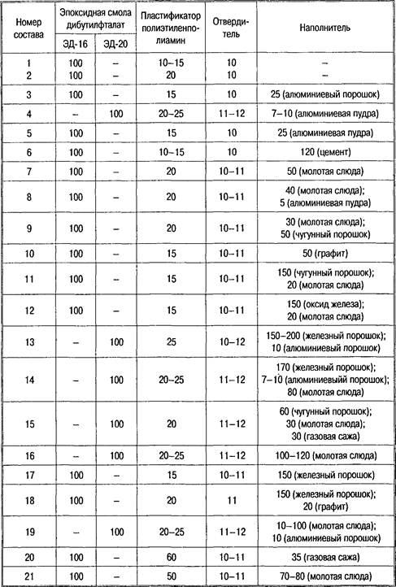
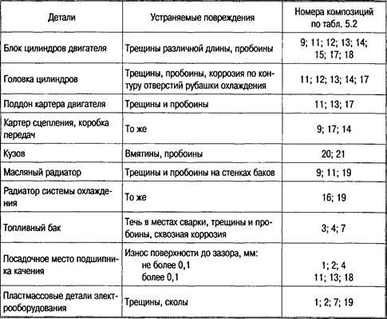

Тема 19
Классификация,
маркировка и применения клеев
Классификация
клеев представляет значительные трудности. Классифицировать клеящие
композиции по областям их применения практически невозможно, так как
одни и те же клеи используются для склеивания различных материалов в
изделиях самого разнообразного назначения. Классификация
клеев по свойствам клеевых соединений, например по прочности
склеивания при тех или иных видах испытаний или по стойкости
к действию высоких температур, атмосферных условий и т. п., также
мало целесообразна, так как в зависимости от свойств склеиваемых
материалов обычно меняются и характеристики клеевых соединений.
Предложено, например, подразделять клеи для склеивания металлов на
конструкционные (силовые) и неконструкционные (несиловые).
Использование
полимерных материалов позволяет значительно снизить трудоемкость ремонта
автомобиля, так как при этом не требуется сложного оборудования и высокой
квалификации рабочих, а также появляется возможность производить ремонт без
разборки узлов и агрегатов. Во многих случаях использование полимерных
материалов позволяет не только заменить сварку или наплавку, но и производить
ремонт таких деталей, которые другими известными способами отремонтировать
невозможно или опасно.
Синтетические
клеи
Синтетические клеи
используют для надежного соединения деталей между собой.
Клеевое соединение менее
трудоемко, чем, например, заклепочное, обеспечивает гладкую поверхность, не
увеличивает массы деталей и не уменьшает рабочей толщины износа трущихся деталей.
Прочность клеевого
соединения зависит от величины адгезии — силы прилипания клея к склеиваемой
поверхности и когезии — прочности самой клеевой пленки.
Адгезия зависит от
химических и межмолекулярных сил притяжения между частицами клея и склеиваемого
материала. При шероховатой поверхности клей затекает во впадины и поры,
обеспечивая дополнительное механическое сцепление.
Адгезия клеевой пленки
зависит также от величины усадки при ее формировании и разности коэффициентов
расширения пленки и материалов склеиваемых поверхностей.
Когезия клеевой пленки
зависит от качества клея, соблюдения условий ее образования (температуры,
времени высыхания, давления) и толщины.
С увеличением толщины
клеевой пленки когезия ухудшается вследствие уменьшения воздействия силового
поля склеиваемых поверхностей. Опрессовка склеиваемых материалов позволяет
получить тонкую сплошную клеевую пленку путем выдавливания избытка клея и
пузырей воздуха.
В состав синтетического
клея входят:
— связующее,
— растворитель,
— наполнитель,
— отвердитель,
— ускоритель отвердения.
В качестве связующего
используют термопластичные и термореактивные полимеры (смолы). Клеи на базе
термопластичных полимеров образуют обратимую пленку, размягчающуюся при
нагревании.
Для получения необходимой
вязкости в клеи вводят такие растворители, как ацетон, спирт, смесь бензина с
этилацетатом и т. п.
Наполнители служат для
уменьшения усадки клея при отверждении и предотвращения появления трещин
клеевой пленки. Наполнителями являются металлы, стекло, фарфор, цемент и другие
материалы.
Отвердитель и ускоритель
отвердения добавляют к клеям, содержащим термореактивные полимеры, для
обеспечения и ускорения образования клеевой пленки.
Технологический процесс
склеивания заключается в очистке и увеличении шероховатости соединяемых
поверхностей, их обезжиривании, нанесении клея и его просушивании, прессовании
деталей и термической обработки клеевого шва.
Склеивание фрикционных
накладок с тормозными колодками или дисками сцепления вместо применения
заклепочного соединения обеспечивает значительную экономию, так как при этом
увеличивается используемая толщина накладки и, следовательно, срок ее службы.
Толщина фрикционных
накладок с заклепками используется всего лишь на 50 %, а при склеивании — более
чем на 80 %. Кроме того, при склеивании не образуются риски и задиры на рабочей
поверхности барабана тормозного механизма.
Детали из термореактивных
пластмасс склеиваются смоляными клеями БФ-2, БФ-4, К-17.
Термопласты склеивают
органическими растворителями или клеями, представляющими собой 2—4%-ный раствор
пластмассы и растворителя.
Пластмассы с металлом и
стеклом склеивают клеем БФ-2, обивку кузовов — с помощью клея БФ-6, резину с
металлом, используя клеи № 88Н и № 61; сталь, стекло, керамика — клеем ВК-2.
В авторемонтных работах
используются цианакриловые и акриловые клеи.
Цианакриловые клеи —
универсальные клеи марок КМ-200С, ТК-300С,ТК-301С, ТК-300Э. Благодаря быстрому
отвердению они позволяют значительно сократить и упростить технологические
операции. Цианакриловые клеи характеризуются:
— высокой адгезией
к любым металлам;
— быстрым
отвердением (от нескольких секунд до нескольких минут);
— сохранением
необходимых свойств в широком диапазоне температур.
Клеи типа ТК обеспечивают
прочное и теплостойкое соединение деталей. Клеи типа КМ позволяют получить
эластичное соединение и применяются для склеивания деталей, испытывающих
вибрационные нагрузки и резкие перепады температур.
Широкое использование
цианакриловых клеев сдерживается из-за проблемы их хранения. Они хранятся при
отрицательных температурах в течение 6 месяцев.
Акриловые клеи —
двухкомпонентные клеи, применяются для склеивания металлов (в т. ч.
замасленных), стекла, керамики, пластмасс. Их компоненты наносят на поверхность
раздельно. Отвердение клея происходит только после совмещения склеиваемых
поверхностей при комнатной температуре. Клеевой шов имеет высокую стойкость к
вибрациям и ударным нагрузкам, хорошо сохраняется при температуре от 5 до 30
°С. Срок хранения до 5 лет. Акриловые клеи выпускаются марок Ан-105, Ан-110,
Ан-109, Ан-106.
Широкое применение
получили клеи на основе эпоксидных смол, к ним относятся клеи ЭД-16 и ЭД-20.
Кроме эпоксидной смолы в него входят отвердитель (полиэтиленамин),
пластификатор (дибутилфталат) и какой-либо наполнитель, сходный по физическим
свойствам со склеиваемыми деталями.
Отвердитель и наполнитель
добавляют в клей перед его использованием, при этом необходимо помнить, что
смола и отвердитель токсичны, поэтому при работе с ними необходимо соблюдать
меры безопасности.
Эпоксидные композиции
обладают уникальным набором технологических свойств. Основное достоинство
технологии ремонта с использованием эпоксидных композиций является возможность
их отверждения при любых температурах и получение необходимых форм и размеров
отвердевшей композиции. Ассортимент отвердителей эпоксидных смол, применяемых
при ремонте автомобилей, позволяет отверждать эпоксидные смолы при температурах
от —5 до +20 °С.
Отвержденные эпоксидные
смолы в чистом виде обладают повышенной хрупкостью. Для повышения их
эластичности в состав смол вводят пластификаторы. В качестве пластификатора
применяется в основном дибутилфталат (ДБФ) — желтоватая маслянистая жидкость с
небольшой молекулярной массой с достаточно высокой температурой кипения.
Как правило,
пластификаторы входят сразу в состав эпоксидных смол, получая так называемый
компаунд, либо отвердители одновременно являются и пластификаторами.
Наполнители существенно
изменяют физико-химические свойства эпоксидных композиций. Они уменьшают
усадку, снижают коэффициент линейного (термического) расширения, увеличивают
теплопроводность, термостойкость и улучшают другие физико-механические
свойства. Наполнители могу быть неорганическими и органическими и представляют
собой порошки различных металлов. Состав некоторых наиболее часто применяемых
эпоксидных композиций приведен в табл. 1.
Рекомендации по
применению некоторых эпоксидных композиций приведены в табл. 2.
При приготовлении
композиции эпоксидную смолу подогревают до температуры 60—80 °С, добавляют
небольшими порциями пластификатор (если он содержится в композиции) и
перемешивают смесь в течение 5—8 мин. Затем вводят наполнитель и перемешивают в
течение 8—10 мин. Такой состав можно хранить длительное время.
Окончательное
приготовление клея осуществляется непосредственно на месте использования и
незадолго до его применения. Это объясняется тем, что после введения
отвердителя время отверждения композиции в зависимости от температуры и типа
отвердителя может быть от нескольких минут до нескольких часов.
Опыт показывает, что при
отклонениях от рекомендуемых дозировок отвердителей до 5 %, пластификаторов и
наполнителей до 10 % не происходит существенных изменений. Большие отклонения
приводят к заметным ухудшениям их свойств.
Таблица 1 Состав
эпоксидных композиций

Таблица 2. Рекомендации
по применению некоторых эпоксидных композиций

В
производственной практике ремонта автомобилей наибольшее распространение
получили многочисленные композиции на основе эпоксидных смол ЭД-20 и ЭД-16, в
которых в качестве пластификатора используется дибутилфталат с отвердителем
полиэтиленполиамином.
Из
отечественных сертифицированных композиционных материалов, изготавливаемых
согласно ТУ 06-05-205278121-003—94, в розничной продаже имеется компаунд
«Десан». Это универсальный компаунд, представляющий собой двухкомпонентный
состав, при смешивании основы и отвердителя которого происходит молекулярная
реакция, позволяющая использовать поверхностную активность различных материалов
и обеспечивающая адгезию компаунда с металлами, деревом, керамикой, резиной,
стеклом.
Контрольные
вопросы
1. От чего зависит прочность клеевого
соединения?
2. От чего зависят адгезия и когезия
клеевой пленки?
3. Что входит в состав клеев?
4. Что представляют собой эпоксидные
композиции?
5. Как правильно приготовить состав
эпоксидной композиции?
6. Техника безопасности и охрана
окружающей среды при использовании автомобильных эксплуатационных материалов